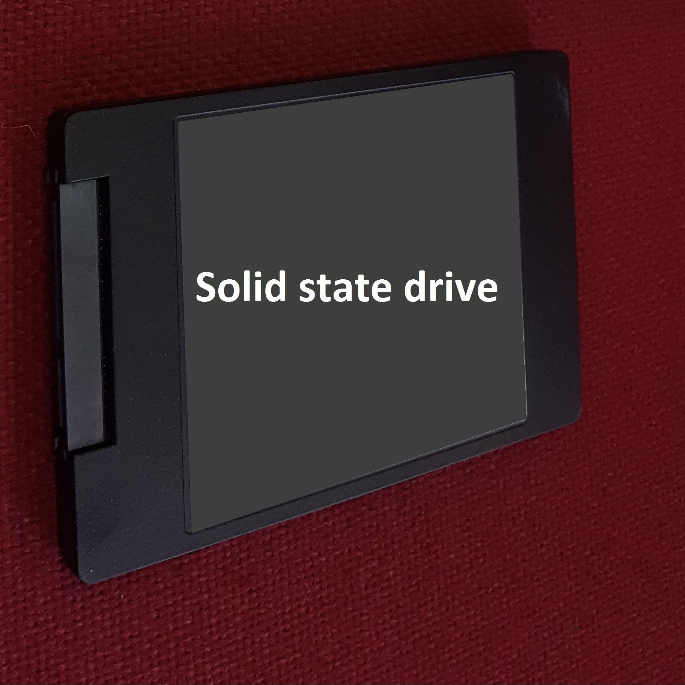

A Solid State Drive is more frequently referred to as an SSD. It is
a form of mass storage device similar to a hard disk drive (HDD). It
supports reading and writing data (unlike some optical drives) and is
non-volatile (maintains stored data when the machine is turned off). It
currently uses NAND based flash memory.
SSDs have much quicker read and write speeds than HDDs. They have no
moving parts. With a HDD the disk has to "spin up" from its sleep state
and they don't need to move a drive head to different parts of the drive
to access data. As HDDs are used their read speed performance diminishes
as data is often fragmented on the drives. This means a single file may
be located in many different places on the disk and the read head has to
move to each location in order to retrieve the data. As SSDs are not
magnetic they do not suffer data loss if strong magnetic fields are
close to the drive.
Despite all these positives, SSDs are much more expensive than HDDs, in
some cases more than 10 times as expensive per gigabyte. This means they
often have smaller capacities than HDDs. They also have a limited number
of write cycles, which may cause their performance to degrade over time.
As this technology is relatively new no-one has reliable degradation
data, but newer SSDs have improved reliability and should last several
years before any reduction in performance can be seen. It will not be
long before SSDs replace HDDs and the HDDs only location will be in
museums alongside floppy disk drives.
|
 |